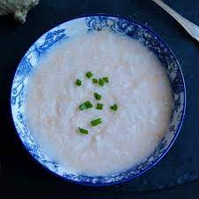

Jok Recipe

Description
This is a recipe for jok or congee. This is a delicious recipe for a cold
day that requires minimal effort.
Ingredients
- 1 cup of uncooked rice
- 1 lb of chicken breast
- 1/2 cup of soy sauce
- 1/2 lb of ham
- 1 tbsp of green onion
Steps
- Put the uncooked rice and chicken breast into a large pot.
- Add 9 cups of water to the pot and set to boil
- Once the pot is boiling, turn down the temperature to a
simmer
- Let the pot simmer for 2 hours.
- After 2 hours, shred the chicken breast inside the pot with 2
forks.
- Dice the green onion.
- Cut the ham into small bite size pieces.
- Mix the soy sauce, ham and green onion into the pot.
- Enjoy!
Return to main page